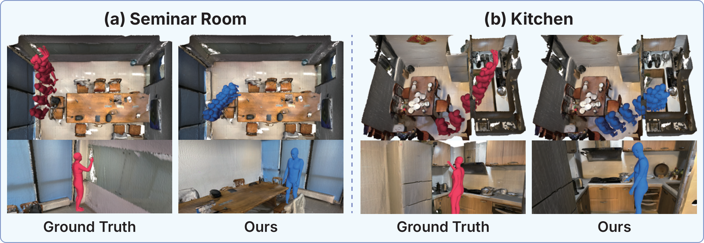

Human motion prediction (HMP) aims to forecast future movement from an observed motion sequence, and recent methods have incorporated 3D scene geometry and object semantics to improve long-term plausibility. However, the destination of future motion remains ambiguous in cluttered scenes: the same observed motion can lead to different interaction targets or navigation modes. Existing methods either handle this ambiguity implicitly or rely on auxiliary signals like gaze that are hard to obtain in practice.
To address this, we propose SGIP, which explicitly predicts where in the scene future motion will be grounded across both objects and open navigation regions, and uses it to condition future trajectory and full-body pose prediction. This scene-grounded interaction prior is learned via intent distillation: at training time only, a teacher model scores candidate scene regions by combining an LLM prompted with a textual description of the person's intent with geometric motion-scene features. A student model learns to reproduce these scores from only the observed motion and 3D scene, making intent and LLM unnecessary at test time.
Across multiple benchmark datasets, SGIP outperforms prior scene-aware baselines on both trajectory and pose accuracy in a realistic deployment setting where neither gaze nor intent is available at inference, demonstrating effectiveness of the proposed framework.
A short motion history does not uniquely determine a person's destination. Scene-aware prediction must distinguish among multiple interaction targets, reason about free navigation, and work with the observations available at deployment.
The same motion prefix can precede approaching a bag, sitting on a chair, or walking through the room.
Scene features alone leave the interaction target implicit, without a directly supervised grounding decision.
Gaze and textual intent can disambiguate motion, but they are difficult to obtain in practical deployment.
SGIP makes scene interaction an explicit, supervisable prediction target. An intent-guided teacher learns a distribution over candidate scene tokens during training. Through prior-level and motion-level distillation, an observation-only student learns to select a grounding token and predict the corresponding future motion.

Figure 2. Overall framework of SGIP. Candidate tokens represent object instances and a scene-global navigation region. The training-only teacher combines LLM-based intent scoring with geometric compatibility. The student learns from the teacher through prior and motion distillation, then conditions trajectory and full-body pose prediction on a selected scene token using only observed motion and the 3D scene at inference.
Represent individual object instances and a scene-global navigation region as candidate grounding tokens.
At training time, combine LLM intent scores with motion-scene geometry to rank candidate tokens.
Transfer the teacher’s token distribution and future-motion predictions to an observation-only student.
Select the top-ranked scene token and predict future trajectory and full-body poses without auxiliary cues.

Figure 3. Token-conditioned alternative futures. With the student, observed motion, and scene held fixed, changing only the grounding token produces different trajectories and final interaction poses. The panels compare the ground-truth interaction object with another high-probability token. Standard benchmark evaluation uses hard top-1 selection; these examples illustrate alternative token-conditioned futures.
On GIMO and PROX, SGIP improves trajectory and full-body pose prediction in the observation-only setting. Models that use additional or privileged cues are reported separately. Lower is better for all four metrics; best and second-best results are highlighted within each table.
| Method | Traj-path ↓ | Traj-dest ↓ | MPJPE-path ↓ | MPJPE-dest ↓ |
|---|---|---|---|---|
| LTD | 673 | 890 | 156.4 | 203.0 |
| SPGSN | 700 | 893 | 157.0 | 202.2 |
| AuxFormer | 732 | 902 | 165.1 | 202.4 |
| SIF3D* | 700 | 823 | 164.2 | 199.6 |
| GAP3DS* | 642 | 701 | 170.1 | 206.4 |
| SGIP (Ours) | 549 ± 5.0 | 681 ± 7.6 | 153.1 ± 1.8 | 195.1 ± 2.6 |
| Method | Traj-path ↓ | Traj-dest ↓ | MPJPE-path ↓ | MPJPE-dest ↓ |
|---|---|---|---|---|
| LTD | 677 | 753 | 223.4 | 226.6 |
| SPGSN | 595 | 663 | 286.3 | 271.3 |
| AuxFormer | 553 | 727 | 199.2 | 240.8 |
| SIF3D* | 488 | 659 | 228.5 | 217.4 |
| SGIP (Ours) | 470 | 576 | 194.6 | 197.7 |
| Method | Auxiliary cue | Traj-path ↓ | Traj-dest ↓ | MPJPE-path ↓ | MPJPE-dest ↓ |
|---|---|---|---|---|---|
| LTD w/ gaze | Gaze | 655 | 801 | 155.6 | 202.0 |
| SPGSN w/ gaze | Gaze | 702 | 982 | 156.0 | 202.0 |
| AuxFormer w/ gaze | Gaze | 622 | 746 | 161.5 | 201.1 |
| BiFu | Gaze | 661 | 727 | 167.8 | 205.0 |
| SIF3D | Gaze | 590 | 666 | 156.6 | 195.7 |
| GAP3DS | Gaze | 575 | 623 | 141.2 | 171.4 |
| SGIPpriv† | Gaze | 528 | 635 | 149.9 | 190.6 |
| SGIPpriv† | Textual intent | 485 | 556 | 151.2 | 187.8 |
The paper's visualizations show how explicit scene grounding guides future trajectories and interaction poses in cluttered indoor scenes. Additional examples compare observation-only and privileged predictions and show predicted motion alongside ground truth.

Figure 4. Qualitative comparison across three GIMO scenes. The top row shows SGIP and the bottom row shows the gaze-free baseline SIF3D*. Each scene includes a top-down trajectory, the final interaction frame, and a full-body pose sequence. Yellow: observed motion; red: ground-truth future; blue: predicted future.

Figure 5. Comparing baselines and SGIP variants. Given the same observed prefix, the top row compares the privileged SGIP teacher and the deployed SGIP student; the bottom row shows SIF3D with and without gaze. Each panel includes a top-down trajectory, a final interaction frame, and a pose sequence. The student uses neither gaze nor textual intent at inference.

Figure 6. Additional qualitative results on GIMO. Each scene pairs the ground-truth future on the left with the SGIP prediction on the right. The top panels show trajectories from above, and the bottom panels show final interaction poses in a seminar room and a kitchen. Red: ground-truth future; blue: predicted future.
Prior distillation provides explicit supervision for scene grounding, while motion distillation transfers the teacher's future-motion predictions. Combining both achieves the lowest trajectory and destination-pose errors in this ablation; prior-only distillation has the lowest MPJPE-path.
| Variant | Traj-path ↓ | Traj-dest ↓ | MPJPE-path ↓ | MPJPE-dest ↓ |
|---|---|---|---|---|
| Prior + motion (full) | 549 | 681 | 153.1 | 195.1 |
| No distillation | 740 | 838 | 169.1 | 204.8 |
| Motion only | 856 | 896 | 164.1 | 198.9 |
| Prior only | 574 | 688 | 151.8 | 198.6 |
@inproceedings{soon2026sgip,
title = {Learning Scene-Grounded Interaction Priors for Scene-Aware Human Motion Prediction},
author = {Soon, Donghyeon and Yoon, Jiil and Kim, Hyeondong and Park, Daehee},
booktitle = {Advances in Neural Information Processing Systems},
year = {2026}
}